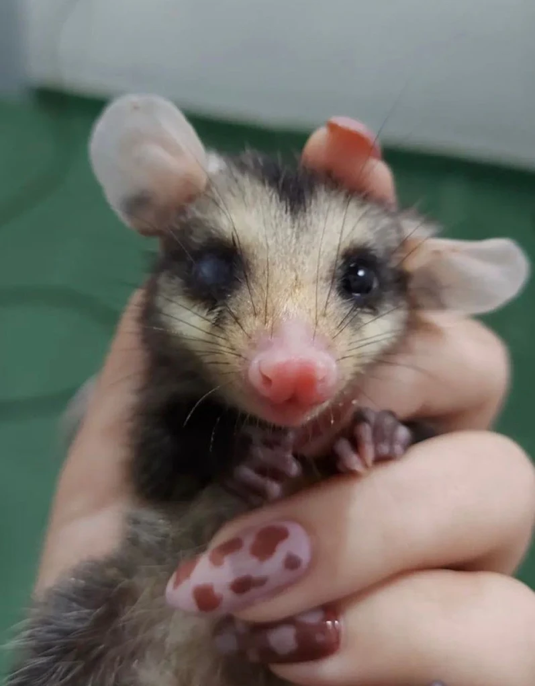
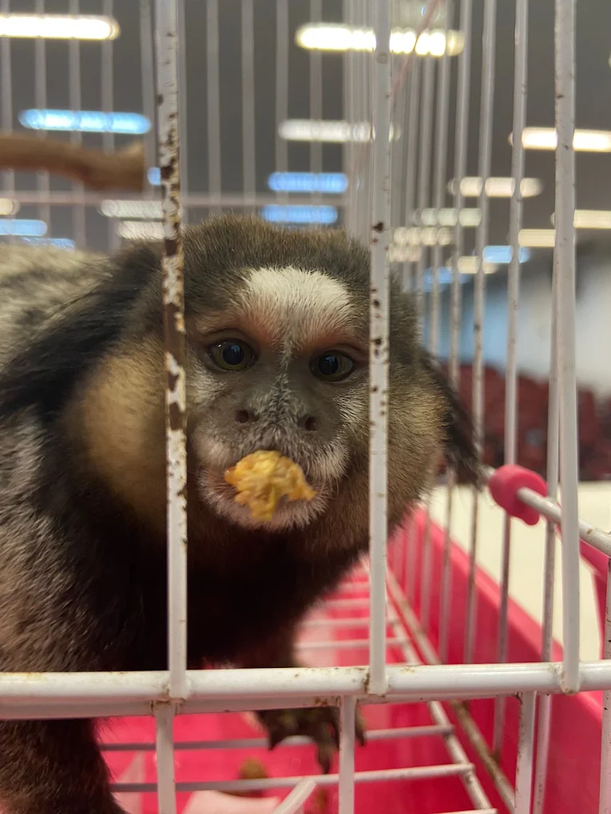
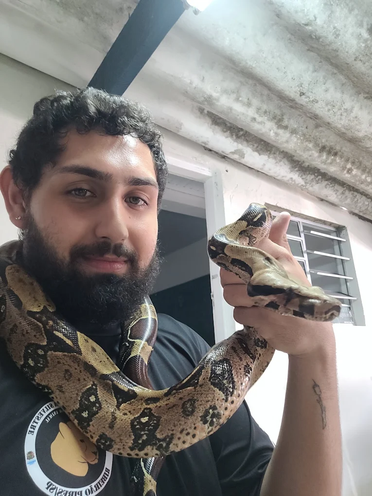

Conheça os principais locais e serviços de resgate de animais da nossa região e saiba a quem recorrer quando encontrar um animal que precisa de ajuda.
Entre as instituições parceiras estão a DPfauna, a GCM Ambiental e o Clube dos Vira-Latas.
Ligue para nosssas instituições de resgate:
.DPfauna: (11) 4824-4197
.GCM Ambiental: (11) 4825-2318
.Clube dos Vira-Latas: (11) 2468-1357
A DPfauna é uma das maiores instituições que atuam na proteção da fauna silvestre, realizando resgates, atendimentos e ações de educação ambiental em Ribeirão Pires.

A Guarda Civil Municipal Ambiental faz o patrulhamento das áreas de mata e nascentes da cidade. É a equipe acionada em casos de maus-tratos, animais feridos em via pública e ocorrências que precisam de resposta imediata.

O Clube dos Vira-Latas é um grupo de protetores independentes que cuida de cães e gatos abandonados na região. Eles resgatam, tratam, castram e encaminham os animais para lares temporários até a adoção.
